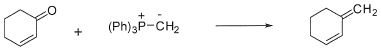
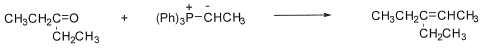
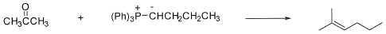
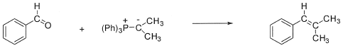
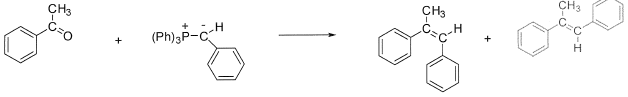

令和2年度 問2 有機化学及び燃料
Wittig 反応を用いてアルケンを合成する下記反応において、下記の①～⑤の選択肢の中で、最も反応が進みにくいものはどれか。
①

②

③

④

⑤

正答
④
リンイリドは、正電荷のリン原子と負電荷の炭素原子が隣接した構造を有する5価のリン化合物です。リンイリドを用いてカルボニル化合物からアルケンを合成する反応をWittig反応と呼びます。
反応は、まずリンイリドに存在する負電荷の炭素原子がカルボニルのδ+性を持つ炭素原子に攻撃して始まります。カルボニルの酸素原子とリン原子で結合を形成し、四員環となります。酸素とリンは非常に強い結合を示すことから、O=P結合を形成して脱離します。
最も反応が一番進みにくいものとして、正答では4番が挙げられています。他の選択肢と比べるとアルデヒドとアルキル2置換リンイリドを使用していることから反応性が高く、最も反応が進みやすいものではないかと考えられます。本問題の正答が4番の理由はわかりませんでした。
リンイリドの負電荷を持つ炭素が攻撃するため、カルボニル炭素のδ+性が高いことが求められます。電子供与性を示すアルキル基の置換が少ないアルデヒドの方がケトンより反応性は高くなります。
リンイリドの炭素原子は負電荷を持つため、電子密度が大きいほど反応性が高くなります。つまり、炭素原子に結合する置換基が電子供与性であるほど反応性は高くなります。対して電子吸引基が結合すると、リンイリドは安定することから、反応性は落ちるもののリンイリド自体を単離できるようになります。